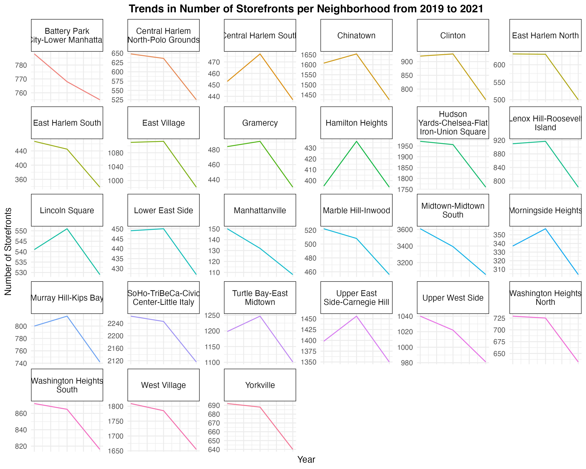

By Vivek Patil| May 31, 2023 | Github
New York City has grappled with increasing storefront vacancies for decades, but the COVID-19 pandemic has rapidly intensified the problem. Once lively commercial corridors now have "For Rent" signs spanning block after block. However, a lack of comprehensive data has made the scale of the crisis unclear and hampered solutions.
In 2019, the city passed Local Law 157 to track storefront vacancies and gain a better understanding of the problem. The limited data available from New York City’s Department of Finance suggests New York City has one of the highest retail vacancy rates in the U.S.
An analysis of the data collected so far under this law reveals a tale of two boroughs. While parts of the Bronx have seen a modest recovery in retail since 2020, Manhattan continues to see storefront vacancies climb at an alarming rate.
MANHATTAN
BRONX
Pelham Parkway
Hamilton Heights
Longwood
Washington
Heights
North
Allerton-Pelham Gardens
Washington Heights South
Eastchester-Edenwald-Baychester
Kingsbridge Heights
Central Harlem South
Williamsbridge-Olinville
Central Harlem North-Polo Grounds
Belmont
Marble Hill-Inwood
University Heights-Morris Heights
Manhattanville
Melrose South-Mott Haven North
Schuylerville-Throgs Neck-Edgewater Park
East Harlem North
East
Tremont
East Harlem South
North Riverdale-Fieldston-Riverdale
Gramercy
Van Nest-Morris Park-Westchester Square
Bronxdale
Lincoln Square
Morrisania-Melrose
Neighborhood
Upper East Side-Carnegie Hill
Claremont-Bathgate
Yorkvill
Fordham South
Upper West Side
Soundview-Bruckner
Westchester-Union
Murray Hill-Kips Bay
Mount Hope
Lower East Side
Co-op City
Chinatown
Van Cortlandt Village
West
Village
Highbridge
Spuyten Duyvil-Kingsbridge
Lenox Hill-Roosevelt Island
Mott Haven-Port Morris
Clinton
Hunts Point
East
Village
Norwood
West
Farms-Bronx
River
Morningside Heights
Bedford Park-Fordham North
SoHo-TriBeCa-Civic
Center-Little
Italy
Soundview-Castle Hill-Clason Point-Harding Park
Battery Park City-Lower Manhattan
East Concourse-Concourse Village
Hudson Yards-Chelsea-Flat Iron-Union Square
Woodlawn-Wake
-
Pelham Bay-Country Club-City Island
Turtle
Bay-East
Midtown
Crotona Park East
Midtown-Midtown South
West Concourse
Stuyvesant Town-Cooper Village
Parkchester
0
5
10
15
20
0
5
10
15
20
Vacancy %
Arrow direction: Right (->) if vacancy percent is higher in 2021-22 than in 2019-20, and Left (<-) if vice versa.
if vacant percent is higher in 2021-22 than in 2019-20, and
Arrow color:
if vice versa.
Source: NYC Department of Finance
Chart by: Vivek Patil
According to recently compiled data, the Bronx is showing signs of retail recovery as 27 out of 36 neighborhoods saw declining vacancy rates over the past three years. However, the opposite is true in Manhattan, where 21 out of 28 areas experienced an increase in empty storefronts along once-bustling commercial corridors.
In the Bronx, neighborhoods such as Parkchester, West Concourse and Crotona had some of the highest increases in retail vacancy. In Parkchester, the vacancy rate rose from 8.29% in 2019-2020 to 13.56% in 2021-2022. The total number of storefronts in the neighborhood decreased from 217 to 177 over the same period. In West Concourse, the vacancy rate nearly doubled from 4.93% to 8.33%, and total storefronts dropped from 426 to 377.
In Mott Haven-Port Morris, which has one of the highest concentrations of storefronts in the Bronx, the vacancy rate dipped slightly from 6.43% to 6.32%, though total storefronts still decreased significantly from 538 to 420. The Williamsbridge-Olinville neighborhood, also with substantial retail activity, saw similar trends. Vacancy declined from 7.86% to 4.70%, but total storefronts dropped markedly from 509 in 2019-2020 to 404 in 2021-2022.Pelham Parkway registered one of the most notable turnarounds, with the vacancy rate falling from 10.53% in 2019-2020 to 3.16% in 2021-2022. However, storefronts still decreased over the same period, from 304 to 253. While retail vacancy has declined in a majority of Bronx neighborhoods over the past two years, the total number of storefronts continues to drop across most areas.
QUEENS
BROOKLYN
Neighborhood
Bedford
0
10
20
30
0
10
20
30
Vacancy %
Arrow direction: Right (->) if vacancy percent is higher in 2021-22 than in 2019-20, and Left (<-) if vice versa.
if vice versa.
if vacant percent is higher in 2021-22 than in 2019-20, and
Arrow color:
Source: NYC Department of Finance
Chart by: Vivek Patil
In Brooklyn, over 29 out of 50 neighborhoods saw vacancies decrease, indicating that outer boroughs may be poised for retail recovery more so than Manhattan. The Brooklyn Heights-Cobble Hill neighborhood saw vacancy rates surge over the past two years. The area's vacancy rate spiked from 9.26% with 270 total storefronts in 2019-2020 to 16.03% with 237 storefronts in 2021-2022. The neighborhood hit a peak vacancy rate of 19.19% in 2020-2021, with nearly 300 storefronts sitting empty.
The rises in vacancy coincide with significant drops in total storefronts, indicating that retailers may be struggling in the area. However, the declines from 2020 to 2022 could signal the start of a turnaround, as new businesses move into spaces left by those that did not survive pandemic lockdowns and restrictions. Still, Brooklyn Heights-Cobble Hill's vacancy rate remains well above the average for Brooklyn neighborhoods and the borough overall. DUMBO-Vinegar Hill-Downtown Brooklyn-Boerum Hill, one of the areas with the highest concentration of storefronts, recorded a substantial vacancy rate of 17% in 2021-2022. This cluster of neighborhoods surrounds Brooklyn's central business district and is known for its historic warehouses, luxury condos, technology companies, and boutiques. However, it appears retailers have faced significant challenges, with nearly one in six storefronts sitting unoccupied.
The data suggests major variations in retail health across Brooklyn's neighborhoods. While some outer-borough areas are bouncing back, neighborhoods closest to Manhattan are suffering the steepest declines and highest vacancy. This could be due to higher rents, more corporate chains, greater shifts to online shopping, and reduced tourism and office workers - trends that are disproportionately impacting New York City's core. More granular data over time is needed to determine if businesses can help curb retail losses and boost opportunity in hard-hit communities.
In Queens, the picture is slightly brighter, with 24 out of 56 neighborhoods registering lower vacancy rates. Though major commercial hubs like Long Island City and Astoria saw slight increases in vacancy rates, the change is not significant compared to the previous data available. With the highest storefront density after Manhattan, Queens typically benefits from high foot traffic and retail demand.

Queens Storefront Vacancy Rates in Major Commercial Hubs for 2021- 22
Total Storefronts
Vacancy %
Neighborhood
Flushing
8
1,101
Jackson Heights
5
848
Hunters Point-Sunnyside-West
10
812
Maspeth
Astoria
8
757
Forest Hills
8
625
Jamaica
8
579
Elmhurst
5
522
Ridgewood
9
447
Bayside-Bayside Hills
6
396
Murray Hill
12
391
North Corona
8
371
Note: vacancy % calculated by number of vacant storefronts divided by total number of storefronts in that area * 100
Data compiled by: Vivek Patil
Source: NYC Department of Finance
However, these same neighborhoods had recorded dramatic spikes in vacancy during the height of the COVID-19 pandemic, as restrictions forced businesses to close and shoppers to stay home. While vacancy rates have declined from their 2020 peaks, some neighborhoods like Long Island City and Astoria still struggle with a glut of empty storefronts that accumulated over the past two years and now total well above the Queens average.
What's the overall trend of Storefronts in New York City?
Number of Storefronts In All Five Boroughs of New York City
2019- 2020
2020 - 2021
25,000
2021 - 2022
20,000
15,000
10,000
5,000
Manhattan
Brooklyn
Queens
Bronx
Staten Island
Source: NYC Department of Finance
Chart by: Vivek Patil
Lack of comprehensive data remains one of the biggest obstacles to gaining a full understanding of New York City's storefront situation. According to figures published by the NYC Department of Finance, the total number of registered storefronts has declined citywide. However, this broad trend provides an incomplete picture, masking significant variations in vacancy rates and storefront inventory across different boroughs and neighborhoods.
While the city's overall storefront data only spans the past three years, the numbers for specific areas point to a crisis long in the making that was severely exacerbated by the COVID-19 pandemic. They suggest certain communities faced systemic challenges around affordability and changing retail dynamics well before 2020. Now they grapple with depleted commercial cores in the aftermath of business closures and restrictions. The scant citywide data that exists follows a pattern consistent across all five boroughs, with vacancy rates and lost storefronts spiking in 2020-2021 during the height of lockdowns before partially recovering in 2021-2022. But this obscures the fact that hardest-hit neighborhoods experienced the bulk of closures, in some cases significantly shrinking their retail base within a matter of months. A fuller picture requires more granular numbers over a longer time period.
To accurately assess the depth of New York City's retail troubles and craft solutions, more years of data must be collected and analyzed. Additional details on commercial rents, lease terms, property ownership, and business revenues are also needed to understand why certain areas have become so vulnerable. Some neighborhoods that appear to be reviving may still be on shakier footing than surface statistics suggest. Overall, while the limited city data provides a glimpse into the immense challenges facing New York City storefronts, it only scratches the surface.
Remote Work Revolution Depletes Manhattan's Commercial Places
Conventional wisdom holds that poorer neighborhoods with higher joblessness would naturally experience greater retail vacancy. However, a regression analysis of the data found little evidence to support that assumption in New York City.
While some economic studies have linked lower socioeconomic status to accelerated storefront churn or closure rates, Manhattan's retail landscape appears to defy simplified explanations. According to the analysis, rent prices are actually negatively correlated with vacancy – meaning higher rents correspond to lower vacancy, rather than the inverse.
This counterintuitive finding suggests retail health depends on complex, interwoven factors. Though lower-income areas may face harsher impacts from events like the pandemic, they have not proved inherently more prone to empty storefronts. In Manhattan's case, the density of foot traffic and opportunity appears more significant than the wealth or poverty of a neighborhood alone in determining retailer survival.

200
150
Vacant Storefronts
100
50
0
0
10
20
30
40
50
Poverty Rate
Here, vacant stores in very zip code is plotted against the poverty rate of that zip code.
Chart by: Vivek Patil
Source: NYC Department of Finance, US Census
At first glance, one might reasonably assume zip codes with higher poverty rates would experience greater retail vacancy. However, this scatter chart reveals a weak correlation between these metrics in New York City.
200
150
Vacant Storefronts
100
50
0
0
2.5
5.0
7.5
Unemployment Rate
Here, vacant stores in very zip code is plotted against the unemployment rate of that zip code.
Chart by: Vivek Patil
Source: NYC Department of Finance, US Census
While a lower-income area may face disproportionate challenges in adapting to economic disruptions, density of foot traffic and opportunity appear equally if not more significant in determining retailer survival. A number of outliers also point to the uneven, and often unequal, ways commercial districts are impacted regardless of broad demographic trends. Every neighborhood possesses vulnerabilities, and benefits, uniquely tied to its built environment, mix of businesses and demographic groups served. This analysis is limited, however, by a lack of additional data on commercial rents, transit access, tourism levels and other metrics that may reveal why certain lower-poverty zip codes are experiencing acute retail distress. Income is but one indicator of an area’s resources and susceptibility to displacement. A fuller picture requires tracing the intricate, interdependent systems that shape neighborhood change over time.

The data shows storefront vacancies rose across New York City neighborhoods in 2021-22, an alarming trend for commercial areas already hit hard by remote work. According to records, the number of occupied storefronts declined in every neighborhood tracked. Experts say landlords may have failed to properly report some vacancies, skewing the data. Still, the trends point to an ongoing struggle, especially in business districts. Midtown and downtown Manhattan, home to many corporate offices, saw some of the biggest spikes in empty storefronts. Analysts argue these areas have suffered more as foot traffic dwindled due to remote work. Though concrete data are lacking, Bloomberg reported that remote work has cost Manhattan at least $12 billion per year in lost economic activity. While some companies are adopting hybrid models with employees in the office a few days a week, that has not yet translated into a rebound for the city's commercial cores. Their fate may depend on whether office attendance picks up in 2022 and beyond.
Storefront Vacancy Rates Climb in Manhattan’s Prime Retail Districts
Number of Storefronts
Vacancy %
% Increase from 2019
Midtown-Midtown South
3,055
18
7.31
SoHo-TriBeCa-Civic Center-Little Italy
2,116
15.93
4.75
Hudson Yards-Chelsea-Flat Iron-Union Square
1,760
16.42
5.46
West Village
1,655
14.08
3.24
Chinatown
1,425
18
3.13
Upper East Side-Carnegie Hill
1,350
12.81
2.09
Turtle Bay-East Midtown
1,101
19.8
6.95
East Village
981
12.23
4.39
Upper West Side
981
11.21
2.27
Number of Storefronts and Vacancy % as of 2021- 22
Chart by: Vivek Patil
Source: NYC Department of Finance
While high rents may be driving some small businesses out of Manhattan, the relationship between rent and vacancy isn’t straightforward. According to a recent study, “There is a negative correlation between average rent and vacancy rates: the neighborhood with the highest average vacancy rate and the lowest average rent is the Lower East Side, while the Upper East Side has the highest rents and the second-lowest retail vacancy rate.”
The conventional wisdom is that high prices and vacancy rates should drive rents down. But Manhattan defies the standard economic model. Why are landlords not cutting rents despite excess supply? One theory is that poorer neighborhoods like the Bronx simply have fewer storefronts, so vacancy rates appear lower. With little existing retail space, there are fewer opportunities for churn. In wealthier areas like Manhattan, landlords may also be reluctant to drop rents, fearing they won’t recoup them. It may be better to take a small hit than face a long-term void. Another view is that poorer areas are less desirable for businesses, so landlords work harder to keep tenants. They know how difficult it will be to find replacements if spaces sit empty. Modest rent cuts are better than no rent at all. In Manhattan’s prime retail districts, there are likely enough deep-pocketed businesses and affluent shoppers to sustain higher rents, at least for now. But as more “For Rent” signs linger, the calculus may change. At some tipping point, lower rents and more tenant diversity may be needed to keep Manhattan’s streets vibrant.
The borough’s retail charm relies on more than upscale brands alone. While higher costs surely factor in, a neighborhood’s foot traffic and experience appear most tied to its retail viability. Manhattan’s storefronts remain coveted for good reason. But their future vitality depends on a mix of tenants able to pay the rent roll, not just a lucky few. If vacancies continue rising, Manhattan’s landlords and businesses may need to adapt to keep this city of shopkeepers thriving.
Methodology
The article analyzes storefront vacancy data collected by New York City's Department of Finance under Local Law 157, which aims to track vacancies in order to gain insight into the problem of increased storefront vacancies. I look at the data at the neighborhood level for all five boroughs over the period from 2019 to 2022, examining trends in vacancy rates and total number of storefronts.
The data show differing trends across boroughs, with the Bronx showing signs of recovery in some neighborhoods while Manhattan continues to see climbing vacancy rates. I conduct regression analysis to determine if lower socioeconomic status corresponds to higher vacancies but finds that rent prices, not poverty or unemployment rates, correlate most strongly with retail health. I assume that foot traffic and opportunity, not income alone, drive business survival in New York City. However, the study is limited by a lack of additional data on factors like commercial rents, transit access, and tourism levels. It only covers 2019 to 2022, and additional details on commercial rents, lease terms, and business revenues are lacking. More granular, long-term data is needed to gain a full understanding of New York City's retail challenges.